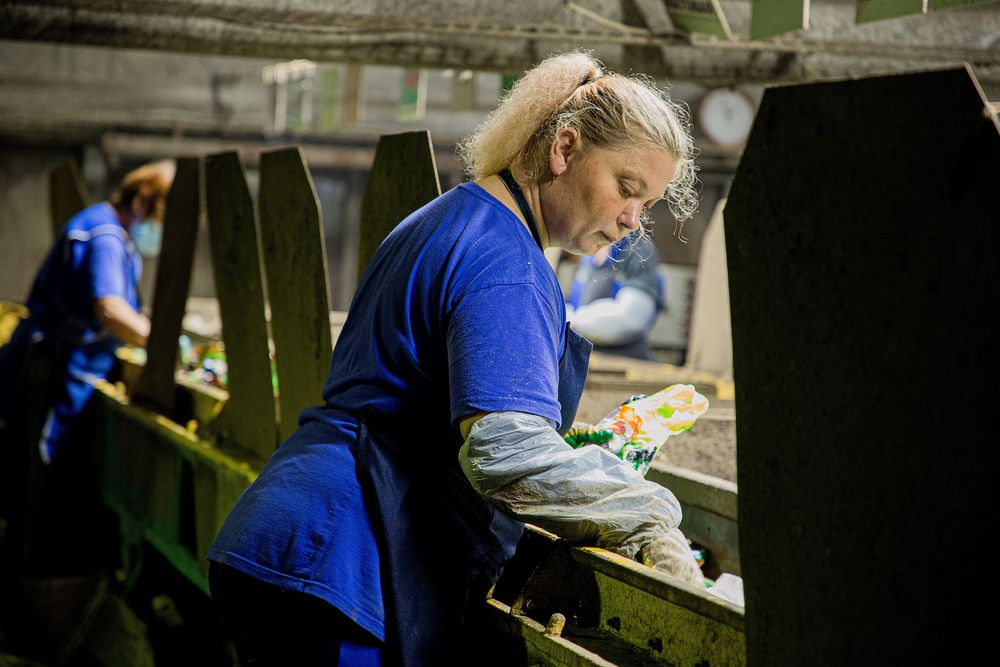

В 2020 году Тверь заняла третье место среди городов с населением от 250 тысяч до 500 тысяч человек в рейтинге Greenpeace по уровню доступности раздельного сбора мусора. На большинстве контейнерных площадок Твери и в ряде поселений Калининского района региональный оператор внедряет дуальную систему раздельного сбора отходов - установлены контейнеры двух цветов. Синие емкости (и контейнеры, и сетки) предназначены для вторсырья (пластик, алюминий, бумага и стекло). Зеленый контейнер – для смешанных отходов (пищевых, предметов, загрязненных пищевыми отходами, изделий из кожи, текстиля и прочих). Всего охвачено раздельным сбором отходов около 34 % общей численности населения региона. Количество площадок, оборудованных под РСО, около 800 штук.
– Расстановка синих контейнеров продолжается, – комментирует Константин Новиков, заместитель генерального директора по производству ООО «ТСАХ». – Так, члены студенческого экологического сообщества «ЛИСТОК» обратились в ООО «ТСАХ» с просьбой поставить на контейнерные площадки в студгородке три контейнера для вторсырья. Предварительно волонтеры провели опрос, выяснили, что студенты готовы заниматься сортировкой отходов, и собрали подписи. Региональный оператор установил дополнительно синие емкости. Также недавно появилась возможность разделять отходы и у жителей деревни Старая Константиновка.
Более детальное разделение отходов предлагается проектом «Дели на четыре». Для эксперимента в трех точках общественных территорий Твери – Парке Победы, детском парке и горсаду – установлены емкости для сбора отходов четырех цветов. В зеленый – смешанные отходы, в синий – пластик, в желтый – бумага, в серый – алюминий и стекло. Жители не всегда правильно определяют, какой мусор куда кидать. Так, упаковки Tetra Pak и бумажные стаканчики не относятся к макулатуре, в их составе кроме бумаги есть пленка, фольга. Их надо отправлять в смешанные отходы. Так же как и картонки, на которых катались с горки – они мокрые и грязные, а значит, в переработку не идут.
Региональный оператор ведет большую разъяснительную работу, чтобы жителям было понятно, какие отходы куда выбрасывать.

Для наглядности, что отделенное вторсырье не смешивается с остальным мусором, содержимое синих контейнеров вывозит спецтехника синего цвета или с синим брендированием.
Отходы из синих контейнеров сразу поступают на сортировочную линию на полигон. Напомним: мусоросортировочный комплекс на 21-м км Бежецкого шоссе модернизирован в декабре 2019 года – его мощность увеличена на 60%. В дальнейшем долю твердых коммунальных отходов, направленных на обработку (то есть на сортировку), планируется довести до 100%, после чего на утилизацию направлять до 50%.
– Из отходов, которые поступают на сортировочную ленту из синих контейнеров, полезных фракций отбирается70-80%, а из зеленых – только 15%, - поясняет Павел Коршунов, начальник полигона. – На данный момент на полигоне отбирается порядка 15-18 фракций, которые потом направляются в переработку.
Бумага поступает в разные точки. Гофрокартон забирает Каменская Бумажно-Картонная фабрика в Кувшиново. Архивы, книги, прессованный картон направляются в Санкт-Петербург и Новгородскую область. Металл перерабатывается на Череповецком металлургическом комбинате Северсталь. Стекло – в Подмосковье.
Весь пластик идет на Тверской Завод Вторичных Полимеров. Это один из крупнейших заводов России, занимающийся переработкой отходов пластмасс с ежегодным объемом более 20 000 тонн.
– В переработку мы принимаем пластик с маркировкой 1, 2, 4, 5, – говорит начальник производства №1 ТЗВП Александр Гагин. – Сырье поступает на ленточный конвейер, затем сортируется по цвету и материалу, сдрабливается, прессуется, моется, сушится. Из него получаются хлопья, которые у нас приобретают производители. Из них делаются автомобильные панели, геотекстиль, синтепон, покрытия для крыш, ведра и многое другое.